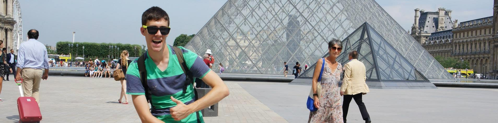

I've been interested in technology for a long time and
early on my Dad was teaching me to take apart computers.
I was lucky enough to go to a high school with a strong computer science program, and after my first Intro to
Computer Science class I was hooked. In high school I took every computer science class they offered, including AP comp sci,
game programming, and web application development -- where we learned to create webapps with PHP and MySql.
I currently attend the University of Maryland, College Park. Aside from my computer science classes, I am also working toward a concentration in Business Management. I spend my spare time captaining the Ultimate Frisbee team and you'll usually find me outside on the weekends at the pool, playing vollyball, squash, billiards or just hanging out at the bar.
I currently attend the University of Maryland, College Park. Aside from my computer science classes, I am also working toward a concentration in Business Management. I spend my spare time captaining the Ultimate Frisbee team and you'll usually find me outside on the weekends at the pool, playing vollyball, squash, billiards or just hanging out at the bar.
Contact me!
JackLotkowski@gmail.com